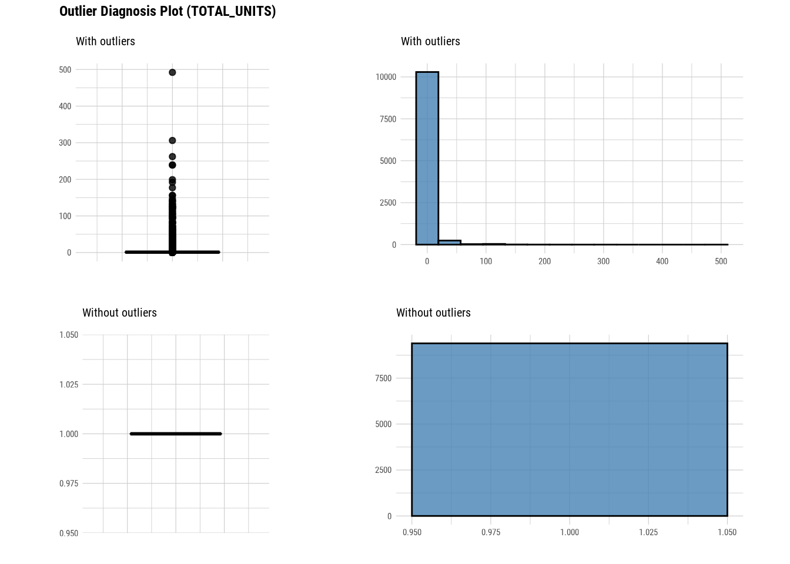
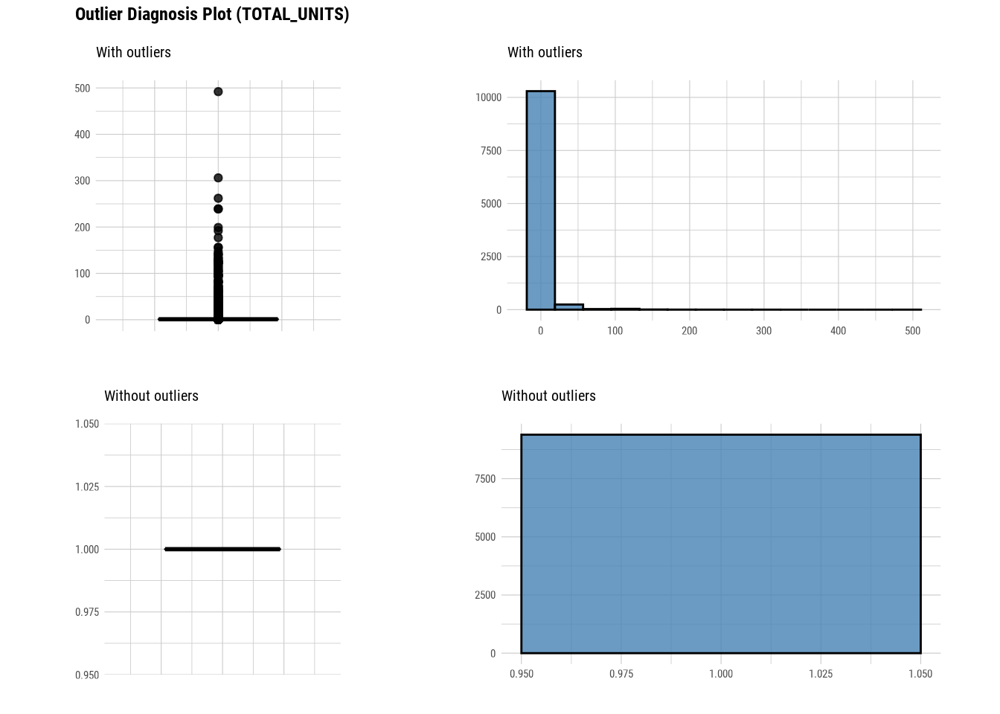

93 Dlookr package
Mridul Gupta
93.1 Introduction
In this tutorial, we are going to learn about the basics of `dlookr’ package, how to use it on a dataset and why it is an important and relevant package for all he data scientist, statistician out there.
93.2 What is dlookr?
According to Cran, dlookr is a collection of tools that support data diagnosis, exploration, and transformation. Data diagnostics provides information and visualization of missing values and outliers and unique and negative values to help us understand the distribution and quality of our data. Data exploration provides information and visualization of the descriptive statistics of univariate variables, normality tests and outliers, correlation of two variables, and relationship between target variable and predictor. Data transformation supports binning for categorizing continuous variables, imputates missing values and outliers, resolving skewness. And it creates automated reports that support these three tasks.
93.3 Why is it important?
Well the description above is sufficient enough to convience someone of its importance but in simpler words I believe there are 3 reasons as to why I believe learning this package is worth putting your time into:
One package has functions to help us diagnose data, explore and transform it and even reporting our findings. This makes it easier for us to remember the important functions otherwise we would also have to remember the packages which allows us to do this stuff.
It can easily be integrated and used with dplyr & tidyverse which is something that has now become ubiquitous in the indistry.
Instead of writing longer codes, this package generally has functions that give lot of information about data without much transformation.
93.4 Usecase
To help us understand its use, let us use a dataset. I am using Rolling sales data for Manhattan. https://www1.nyc.gov/site/finance/taxes/property-rolling-sales-data.page
#Reading data
manhattan <- read_excel("rollingsales_manhattan.xlsx", skip = 4)
dim(manhattan)## [1] 19354 2193.4.1 Data Diagnosis
93.4.1.1 Overall Diagnosis
# Get missing and unique count for each column
diagnose(manhattan)## # A tibble: 21 × 6
## variables types missing_count missing_percent unique_count unique_rate
## <chr> <chr> <int> <dbl> <int> <dbl>
## 1 BOROUGH chara… 0 0 1 0.0000517
## 2 NEIGHBORHOOD chara… 0 0 39 0.00202
## 3 BUILDING_CLASS… chara… 0 0 39 0.00202
## 4 TAX_CLASS_AT_P… chara… 18 0.0930 9 0.000465
## 5 BLOCK numer… 0 0 1341 0.0693
## 6 LOT numer… 0 0 1662 0.0859
## 7 EASEMENT logic… 19354 100 1 0.0000517
## 8 BUILDING_CLASS… chara… 18 0.0930 112 0.00579
## 9 ADDRESS chara… 0 0 19010 0.982
## 10 APARTMENT_NUMB… chara… 10204 52.7 2630 0.136
## # … with 11 more rows
# Using with dplyr and finding columns with missing data
diagnose(manhattan)## # A tibble: 21 × 6
## variables types missing_count missing_percent unique_count unique_rate
## <chr> <chr> <int> <dbl> <int> <dbl>
## 1 BOROUGH chara… 0 0 1 0.0000517
## 2 NEIGHBORHOOD chara… 0 0 39 0.00202
## 3 BUILDING_CLASS… chara… 0 0 39 0.00202
## 4 TAX_CLASS_AT_P… chara… 18 0.0930 9 0.000465
## 5 BLOCK numer… 0 0 1341 0.0693
## 6 LOT numer… 0 0 1662 0.0859
## 7 EASEMENT logic… 19354 100 1 0.0000517
## 8 BUILDING_CLASS… chara… 18 0.0930 112 0.00579
## 9 ADDRESS chara… 0 0 19010 0.982
## 10 APARTMENT_NUMB… chara… 10204 52.7 2630 0.136
## # … with 11 more rows
manhattan %>%
diagnose() %>%
select(-unique_count, -unique_rate) %>%
filter(missing_count > 0) %>%
arrange(desc(missing_count))## # A tibble: 10 × 4
## variables types missing_count missing_percent
## <chr> <chr> <int> <dbl>
## 1 EASEMENT logical 19354 100
## 2 LAND_SQUARE_FEET numeric 17885 92.4
## 3 GROSS_SQUARE_FEET numeric 17885 92.4
## 4 COMMERCIAL_UNITS numeric 17292 89.3
## 5 APARTMENT_NUMBER character 10204 52.7
## 6 RESIDENTIAL_UNITS numeric 9328 48.2
## 7 TOTAL_UNITS numeric 8735 45.1
## 8 YEAR_BUILT numeric 2057 10.6
## 9 TAX_CLASS_AT_PRESENT character 18 0.0930
## 10 BUILDING_CLASS_AT_PRESENT character 18 0.0930We easily get the columns where we have data missing.
Now lets look at different features/columns in data.
93.4.1.2 Numerical data diagnosis
# Looking at numerical data
diagnose_numeric(manhattan)## # A tibble: 10 × 10
## variables min Q1 mean median Q3 max zero minus outlier
## <chr> <dbl> <dbl> <dbl> <dbl> <dbl> <dbl> <int> <int> <int>
## 1 BLOCK 10 738 1.10e3 1162 1.45e3 2.25e3 0 0 0
## 2 LOT 1 29 7.52e2 1003 1.20e3 9.11e3 0 0 451
## 3 ZIP_CODE 10001 10013 1.00e4 10022 1.00e4 1.05e4 0 0 2601
## 4 RESIDENTIAL_… 0 1 2.68e0 1 1 e0 4.9 e2 300 0 1257
## 5 COMMERCIAL_U… 0 0 2.09e0 1 1 e0 2.39e2 870 0 192
## 6 TOTAL_UNITS 0 1 2.93e0 1 1 e0 4.92e2 88 0 1228
## 7 LAND_SQUARE_… 0 1749 6.02e3 2313 4.25e3 6.59e5 8 0 191
## 8 GROSS_SQUARE… 0 3756 3.35e4 6681 1.38e4 2.4 e6 83 0 230
## 9 YEAR_BUILT 1800 1922 1.95e3 1957 1.99e3 2.02e3 0 0 3
## 10 SALE_PRICE 0 430000 2.42e6 925000 2.00e6 8.10e8 3136 0 1873One function directly gives quantiles,mean, zeros, negative values and outliers for all the numeric values.
# Using with dplyr and finding colums with zero values
diagnose_numeric(manhattan) %>%
filter(zero > 0) ## # A tibble: 6 × 10
## variables min Q1 mean median Q3 max zero minus outlier
## <chr> <dbl> <dbl> <dbl> <dbl> <dbl> <dbl> <int> <int> <int>
## 1 RESIDENTIAL_UNITS 0 1 2.68e0 1 1 e0 4.9 e2 300 0 1257
## 2 COMMERCIAL_UNITS 0 0 2.09e0 1 1 e0 2.39e2 870 0 192
## 3 TOTAL_UNITS 0 1 2.93e0 1 1 e0 4.92e2 88 0 1228
## 4 LAND_SQUARE_FEET 0 1749 6.02e3 2313 4.25e3 6.59e5 8 0 191
## 5 GROSS_SQUARE_FEET 0 3756 3.35e4 6681 1.38e4 2.4 e6 83 0 230
## 6 SALE_PRICE 0 430000 2.42e6 925000 2.00e6 8.10e8 3136 0 187393.4.1.3 Categorical data diagnosis
# Looking at categorical data
diagnose_category(manhattan)## # A tibble: 83 × 6
## variables levels N freq ratio rank
## <chr> <chr> <int> <int> <dbl> <int>
## 1 BOROUGH 1 19354 19354 100 1
## 2 NEIGHBORHOOD UPPER EAST SIDE (59-79) 19354 1999 10.3 1
## 3 NEIGHBORHOOD UPPER EAST SIDE (79-96) 19354 1886 9.74 2
## 4 NEIGHBORHOOD UPPER WEST SIDE (59-79) 19354 1746 9.02 3
## 5 NEIGHBORHOOD MIDTOWN EAST 19354 1160 5.99 4
## 6 NEIGHBORHOOD UPPER WEST SIDE (79-96) 19354 1151 5.95 5
## 7 NEIGHBORHOOD CHELSEA 19354 912 4.71 6
## 8 NEIGHBORHOOD MIDTOWN WEST 19354 881 4.55 7
## 9 NEIGHBORHOOD GREENWICH VILLAGE-CENTRAL 19354 759 3.92 8
## 10 NEIGHBORHOOD HARLEM-CENTRAL 19354 708 3.66 9
## # … with 73 more rowsThis directly gives us all the levels for all the categorical columns and their frequency as well.
## # A tibble: 2 × 6
## variables levels N freq ratio rank
## <chr> <chr> <int> <int> <dbl> <int>
## 1 TAX_CLASS_AT_PRESENT <NA> 19354 18 0.0930 8
## 2 APARTMENT_NUMBER <NA> 19354 10204 52.7 193.4.1.4 Outlier diagnosis
# Diagnose outlier for each numerical column/feature
diagnose_outlier(manhattan) ## # A tibble: 10 × 6
## variables outliers_cnt outliers_ratio outliers_mean with_mean without_mean
## <chr> <int> <dbl> <dbl> <dbl> <dbl>
## 1 BLOCK 0 0 NaN 1.10e3 1097.
## 2 LOT 451 2.33 4598. 7.52e2 660.
## 3 ZIP_CODE 2601 13.4 10103. 1.00e4 10019.
## 4 RESIDENTIAL… 1257 6.49 14.4 2.68e0 1
## 5 COMMERCIAL_… 192 0.992 16.5 2.09e0 0.613
## 6 TOTAL_UNITS 1228 6.34 17.7 2.93e0 1
## 7 LAND_SQUARE… 191 0.987 28980. 6.02e3 2588.
## 8 GROSS_SQUAR… 230 1.19 175727. 3.35e4 7072.
## 9 YEAR_BUILT 3 0.0155 1800 1.95e3 1954.
## 10 SALE_PRICE 1873 9.68 14915667. 2.42e6 1081708.This tells us the number of outliers are there in each numerical column. If we look at with_mean and without_mean column it also helps us analyse the effect of outlier on data.We can even plot outliers:
Here we use diagnose_outlier(), plot_outlier(), and dplyr packages to visualize all numerical variables with an outlier ratio of 0.5% or higher.
# Diagnose outlier for each numerical column/feature
manhattan %>%
plot_outlier(diagnose_outlier(manhattan) %>%
filter(outliers_ratio >= 0.5) %>%
select(variables) %>%
unlist())


93.4.2 EDA
93.4.2.1 Univariate Analysis
# Looking at the numerical data
describe(manhattan)## # A tibble: 10 × 26
## variable n na mean sd se_mean IQR skewness kurtosis p00
## <chr> <int> <int> <dbl> <dbl> <dbl> <dbl> <dbl> <dbl> <dbl>
## 1 BLOCK 19354 0 1.10e3 5.20e2 3.74e+0 7.09e2 -0.149 -0.464 10
## 2 LOT 19354 0 7.52e2 8.86e2 6.37e+0 1.18e3 2.77 16.2 1
## 3 ZIP_CODE 19354 0 1.00e4 3.61e1 2.60e-1 1.5 e1 4.14 25.4 10001
## 4 RESIDENTI… 10026 9328 2.68e0 1.16e1 1.16e-1 0 16.6 448. 0
## 5 COMMERCIA… 2062 17292 2.09e0 1.04e1 2.30e-1 1 e0 13.7 234. 0
## 6 TOTAL_UNI… 10619 8735 2.93e0 1.24e1 1.20e-1 0 15.0 361. 0
## 7 LAND_SQUA… 1469 17885 6.02e3 2.73e4 7.12e+2 2.50e3 20.4 467. 0
## 8 GROSS_SQU… 1469 17885 3.35e4 1.34e5 3.49e+3 1.00e4 11.4 164. 0
## 9 YEAR_BUILT 17297 2057 1.95e3 3.81e1 2.89e-1 6.4 e1 0.227 -1.11 1800
## 10 SALE_PRICE 19354 0 2.42e6 1.03e7 7.37e+4 1.57e6 35.7 2249. 0
## # … with 16 more variables: p01 <dbl>, p05 <dbl>, p10 <dbl>, p20 <dbl>,
## # p25 <dbl>, p30 <dbl>, p40 <dbl>, p50 <dbl>, p60 <dbl>, p70 <dbl>,
## # p75 <dbl>, p80 <dbl>, p90 <dbl>, p95 <dbl>, p99 <dbl>, p100 <dbl>This gives very detailed metrics regarding the distribution of numerical variables. Along with basic metrics like mean, standard deviation it also gives metrics like skewness, kurtosis, percentiles, IQR etc.
# Looking at the numerical data
normality(manhattan)## # A tibble: 10 × 4
## vars statistic p_value sample
## <chr> <dbl> <dbl> <dbl>
## 1 BLOCK 0.982 5.98e-25 5000
## 2 LOT 0.691 4.13e-70 5000
## 3 ZIP_CODE 0.578 1.58e-76 5000
## 4 RESIDENTIAL_UNITS 0.0962 3.28e-77 5000
## 5 COMMERCIAL_UNITS 0.130 1.05e-43 5000
## 6 TOTAL_UNITS 0.108 2.16e-78 5000
## 7 LAND_SQUARE_FEET 0.173 3.40e-37 5000
## 8 GROSS_SQUARE_FEET 0.241 4.52e-36 5000
## 9 YEAR_BUILT 0.934 1.04e-40 5000
## 10 SALE_PRICE 0.151 5.20e-92 5000
# Looking at the numerical data
plot_normality(manhattan)


# Looking at the numerical data
manhattan %>%
filter(NEIGHBORHOOD == "MIDTOWN EAST") %>%
group_by(`ZIP_CODE`) %>%
plot_normality(`SALE_PRICE`)


###Bivariate Analysis
# Looking at the numerical data
correlate(manhattan)## # A tibble: 90 × 3
## var1 var2 coef_corr
## <fct> <fct> <dbl>
## 1 LOT BLOCK -0.185
## 2 ZIP_CODE BLOCK 0.239
## 3 RESIDENTIAL_UNITS BLOCK 0.0462
## 4 COMMERCIAL_UNITS BLOCK -0.0808
## 5 TOTAL_UNITS BLOCK 0.0377
## 6 LAND_SQUARE_FEET BLOCK -0.00909
## 7 GROSS_SQUARE_FEET BLOCK -0.0860
## 8 YEAR_BUILT BLOCK -0.0974
## 9 SALE_PRICE BLOCK -0.0487
## 10 BLOCK LOT -0.185
## # … with 80 more rows
# Looking at the numerical data
correlate(manhattan, `SALE_PRICE`,`YEAR_BUILT`,`LAND_SQUARE_FEET`)## # A tibble: 27 × 3
## var1 var2 coef_corr
## <fct> <fct> <dbl>
## 1 LAND_SQUARE_FEET BLOCK -0.00909
## 2 YEAR_BUILT BLOCK -0.0974
## 3 SALE_PRICE BLOCK -0.0487
## 4 LAND_SQUARE_FEET LOT 0.0194
## 5 YEAR_BUILT LOT 0.472
## 6 SALE_PRICE LOT 0.00774
## 7 LAND_SQUARE_FEET ZIP_CODE -0.0222
## 8 YEAR_BUILT ZIP_CODE 0.0504
## 9 SALE_PRICE ZIP_CODE -0.0249
## 10 LAND_SQUARE_FEET RESIDENTIAL_UNITS 0.114
## # … with 17 more rows
# Looking at the numerical data
plot_correlate(manhattan)
# Looking at the numerical data
plot_correlate(manhattan, `SALE_PRICE`,`YEAR_BUILT`,`LAND_SQUARE_FEET`)
93.4.3 EDA on Target Variable
# Imputing Tax class at time of sale column
num <- target_by(manhattan,`SALE_PRICE`)
num_num <- relate(num,`LAND_SQUARE_FEET`)
num_num##
## Call:
## lm(formula = formula_str, data = data)
##
## Coefficients:
## (Intercept) LAND_SQUARE_FEET
## 7574327.3 102.1
# Imputing Tax class at time of sale column
summary(num_num)##
## Call:
## lm(formula = formula_str, data = data)
##
## Residuals:
## Min 1Q Median 3Q Max
## -73368230 -7780279 -5859693 -894898 798878520
##
## Coefficients:
## Estimate Std. Error t value Pr(>|t|)
## (Intercept) 7574327.3 824042.4 9.192 < 2e-16 ***
## LAND_SQUARE_FEET 102.1 29.5 3.460 0.000557 ***
## ---
## Signif. codes: 0 '***' 0.001 '**' 0.01 '*' 0.05 '.' 0.1 ' ' 1
##
## Residual standard error: 30840000 on 1467 degrees of freedom
## (17885 observations deleted due to missingness)
## Multiple R-squared: 0.008092, Adjusted R-squared: 0.007416
## F-statistic: 11.97 on 1 and 1467 DF, p-value: 0.0005566
# Imputing Tax class at time of sale column
plot(num_num)
93.4.4 Data Transformation
93.4.4.1 Missing value Imputation
# Imputing Tax class at time of sale column
land_square_feet <- imputate_na(manhattan,`LAND_SQUARE_FEET`,SALE_PRICE, method = "mice")##
## iter imp variable
## 1 1 RESIDENTIAL_UNITS COMMERCIAL_UNITS TOTAL_UNITS LAND_SQUARE_FEET GROSS_SQUARE_FEET YEAR_BUILT
## 1 2 RESIDENTIAL_UNITS COMMERCIAL_UNITS TOTAL_UNITS LAND_SQUARE_FEET GROSS_SQUARE_FEET YEAR_BUILT
## 1 3 RESIDENTIAL_UNITS COMMERCIAL_UNITS TOTAL_UNITS LAND_SQUARE_FEET GROSS_SQUARE_FEET YEAR_BUILT
## 1 4 RESIDENTIAL_UNITS COMMERCIAL_UNITS TOTAL_UNITS LAND_SQUARE_FEET GROSS_SQUARE_FEET YEAR_BUILT
## 1 5 RESIDENTIAL_UNITS COMMERCIAL_UNITS TOTAL_UNITS LAND_SQUARE_FEET GROSS_SQUARE_FEET YEAR_BUILT
## 2 1 RESIDENTIAL_UNITS COMMERCIAL_UNITS TOTAL_UNITS LAND_SQUARE_FEET GROSS_SQUARE_FEET YEAR_BUILT
## 2 2 RESIDENTIAL_UNITS COMMERCIAL_UNITS TOTAL_UNITS LAND_SQUARE_FEET GROSS_SQUARE_FEET YEAR_BUILT
## 2 3 RESIDENTIAL_UNITS COMMERCIAL_UNITS TOTAL_UNITS LAND_SQUARE_FEET GROSS_SQUARE_FEET YEAR_BUILT
## 2 4 RESIDENTIAL_UNITS COMMERCIAL_UNITS TOTAL_UNITS LAND_SQUARE_FEET GROSS_SQUARE_FEET YEAR_BUILT
## 2 5 RESIDENTIAL_UNITS COMMERCIAL_UNITS TOTAL_UNITS LAND_SQUARE_FEET GROSS_SQUARE_FEET YEAR_BUILT
## 3 1 RESIDENTIAL_UNITS COMMERCIAL_UNITS TOTAL_UNITS LAND_SQUARE_FEET GROSS_SQUARE_FEET YEAR_BUILT
## 3 2 RESIDENTIAL_UNITS COMMERCIAL_UNITS TOTAL_UNITS LAND_SQUARE_FEET GROSS_SQUARE_FEET YEAR_BUILT
## 3 3 RESIDENTIAL_UNITS COMMERCIAL_UNITS TOTAL_UNITS LAND_SQUARE_FEET GROSS_SQUARE_FEET YEAR_BUILT
## 3 4 RESIDENTIAL_UNITS COMMERCIAL_UNITS TOTAL_UNITS LAND_SQUARE_FEET GROSS_SQUARE_FEET YEAR_BUILT
## 3 5 RESIDENTIAL_UNITS COMMERCIAL_UNITS TOTAL_UNITS LAND_SQUARE_FEET GROSS_SQUARE_FEET YEAR_BUILT
## 4 1 RESIDENTIAL_UNITS COMMERCIAL_UNITS TOTAL_UNITS LAND_SQUARE_FEET GROSS_SQUARE_FEET YEAR_BUILT
## 4 2 RESIDENTIAL_UNITS COMMERCIAL_UNITS TOTAL_UNITS LAND_SQUARE_FEET GROSS_SQUARE_FEET YEAR_BUILT
## 4 3 RESIDENTIAL_UNITS COMMERCIAL_UNITS TOTAL_UNITS LAND_SQUARE_FEET GROSS_SQUARE_FEET YEAR_BUILT
## 4 4 RESIDENTIAL_UNITS COMMERCIAL_UNITS TOTAL_UNITS LAND_SQUARE_FEET GROSS_SQUARE_FEET YEAR_BUILT
## 4 5 RESIDENTIAL_UNITS COMMERCIAL_UNITS TOTAL_UNITS LAND_SQUARE_FEET GROSS_SQUARE_FEET YEAR_BUILT
## 5 1 RESIDENTIAL_UNITS COMMERCIAL_UNITS TOTAL_UNITS LAND_SQUARE_FEET GROSS_SQUARE_FEET YEAR_BUILT
## 5 2 RESIDENTIAL_UNITS COMMERCIAL_UNITS TOTAL_UNITS LAND_SQUARE_FEET GROSS_SQUARE_FEET YEAR_BUILT
## 5 3 RESIDENTIAL_UNITS COMMERCIAL_UNITS TOTAL_UNITS LAND_SQUARE_FEET GROSS_SQUARE_FEET YEAR_BUILT
## 5 4 RESIDENTIAL_UNITS COMMERCIAL_UNITS TOTAL_UNITS LAND_SQUARE_FEET GROSS_SQUARE_FEET YEAR_BUILT
## 5 5 RESIDENTIAL_UNITS COMMERCIAL_UNITS TOTAL_UNITS LAND_SQUARE_FEET GROSS_SQUARE_FEET YEAR_BUILT
# Imputing outliers in zip code
summary(land_square_feet)## * Impute missing values based on Multivariate Imputation by Chained Equations
## - method : mice
## - random seed : 424
##
## * Information of Imputation (before vs after)
## Original Imputation
## n 1469.00000 19354.000000
## na 17885.00000 0.000000
## mean 6019.76378 14902.107254
## sd 27286.48687 22386.951434
## se_mean 711.92907 160.919839
## IQR 2502.00000 15308.700000
## skewness 20.44256 7.012785
## kurtosis 467.37765 103.982902
## p00 0.00000 0.000000
## p01 46.36000 1088.378000
## p05 1084.60000 1741.730000
## p10 1386.80000 2059.440000
## p20 1659.40000 2851.720000
## p25 1749.00000 3437.350000
## p30 1862.00000 4110.960000
## p40 2013.00000 5885.120000
## p50 2313.00000 9002.600000
## p60 2523.00000 12796.080000
## p70 3679.20000 15715.680000
## p75 4251.00000 18746.050000
## p80 5046.00000 23122.440000
## p90 10294.00000 30637.200000
## p95 16066.00000 38047.830000
## p99 55862.00000 137675.834000
## p100 659375.00000 659375.000000
# Imputing outliers in zip code
plot(land_square_feet) #### Outlier value Imputation
#### Outlier value Imputation
# Imputing outliers in year built
year_built <- imputate_outlier(manhattan, YEAR_BUILT, method = "capping")
# Imputing outliers in year built
summary(year_built)## Impute outliers with capping
##
## * Information of Imputation (before vs after)
## Original Imputation
## n 17297.0000000 17297.0000000
## na 2057.0000000 2057.0000000
## mean 1954.4412326 1954.4585766
## sd 38.0661067 38.0184836
## se_mean 0.2894363 0.2890742
## IQR 64.0000000 64.0000000
## skewness 0.2269967 0.2376013
## kurtosis -1.1091423 -1.1466029
## p00 1800.0000000 1840.0000000
## p01 1899.0000000 1899.0000000
## p05 1900.0000000 1900.0000000
## p10 1910.0000000 1910.0000000
## p20 1920.0000000 1920.0000000
## p25 1922.0000000 1922.0000000
## p30 1926.0000000 1926.0000000
## p40 1931.0000000 1931.0000000
## p50 1957.0000000 1957.0000000
## p60 1963.0000000 1963.0000000
## p70 1974.0000000 1974.0000000
## p75 1986.0000000 1986.0000000
## p80 2000.0000000 2000.0000000
## p90 2014.0000000 2014.0000000
## p95 2017.0000000 2017.0000000
## p99 2019.0000000 2019.0000000
## p100 2021.0000000 2021.0000000
# Imputing outliers in year built
plot(year_built)
# Imputing outliers in zip code
plot_outlier(manhattan)

 


 #### Standardization and Resolving Skewness
#### Standardization and Resolving Skewness
manhattan %>%
mutate(SALE_PRICE_MINMAX = transform(manhattan$SALE_PRICE, method = "minmax")) %>%
select(SALE_PRICE_MINMAX) %>%
boxplot()
find_skewness(manhattan, value = TRUE, thres = 0.1)## BLOCK LOT ZIP_CODE RESIDENTIAL_UNITS
## -0.149 2.775 4.143 16.631
## COMMERCIAL_UNITS TOTAL_UNITS LAND_SQUARE_FEET GROSS_SQUARE_FEET
## 13.699 14.993 20.422 11.368
## YEAR_BUILT SALE_PRICE
## 0.227 35.721
# Looking at the numerical data
plot_normality(manhattan)


# Looking at the numerical data
gross_square_feet_log = transform(manhattan$GROSS_SQUARE_FEET, method = "log")
summary(gross_square_feet_log)## * Resolving Skewness with log
##
## * Information of Transformation (before vs after)
## Original Transformation
## n 1469.00000 1469.000000
## na 17885.00000 17885.000000
## mean 33477.88836 -Inf
## sd 133861.41500 NaN
## se_mean 3492.56513 NaN
## IQR 10036.00000 1.300734
## skewness 11.37915 NaN
## kurtosis 163.87090 NaN
## p00 0.00000 -Inf
## p01 0.00000 -Inf
## p05 0.00000 -Inf
## p10 2435.40000 7.797866
## p20 3363.00000 8.120588
## p25 3756.00000 8.231110
## p30 4129.20000 8.325839
## p40 5100.00000 8.536996
## p50 6681.00000 8.807023
## p60 8924.00000 9.096500
## p70 11250.20000 9.328136
## p75 13792.00000 9.531844
## p80 19333.20000 9.869571
## p90 68108.00000 11.128850
## p95 130298.20000 11.777576
## p99 458473.72000 13.034214
## p100 2400000.00000 14.690979
# Looking at the numerical data
plot(gross_square_feet_log)